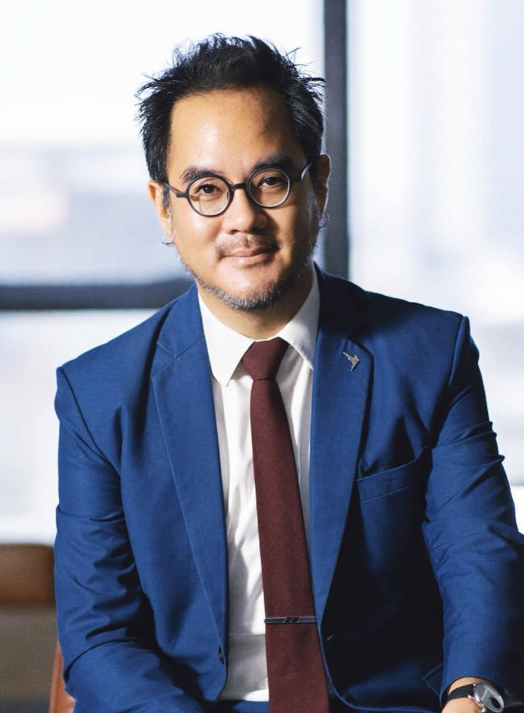

Axiom ↗
Decision systems for cities and operators.
Source repositoryBANGKOK · ARCHITECTURE / ANTHROPOLOGY / CIVIC SYSTEMS
Reading cities.
Building ways to act.
An architect, urban designer and anthropologist working across the built environment and public life.
Start with the biography ↓
SELECTED PUBLIC WORK
A studio door.
Each project has its own room.
These public repositories explain the work in its own terms. Open a system or read how it was made.
Decision systems for cities and operators.
Source repositoryA city index with a declared method.
Source repositoryThe architecture and method behind an open-data flood watch.
An independent interpretation of Sanzo Wada’s colour relationships.
Source repositoryBIOGRAPHY
Architecture asks how.
Anthropology asks for whom.
Dr Non’s research connects architecture and the social sciences, with work on urban transformation, heritage and the life of neighbourhoods.
His educational background includes a PhD from Harvard University and master’s degrees from Oxford and MIT, where he was a Fulbright Scholar. The ITU speaker record identifies him as a smart-city expert at Thailand’s Digital Economy Promotion Agency. This is a dated institutional profile, rather than a live employment register.
The Harvard-Yenching Institute documents teaching and research across institutions including MIT, Fudan University, New York University and the University of Sydney, alongside publications on Shanghai and urban design.
WRITING
Research and narrative.
Different ways to examine a city.
COLOPHON / SOURCES
The biography uses the institutional records linked above. Project descriptions come from their public source repositories and this studio’s README. No outcome statistics, customer testimonials or new service guarantees have been added. Institutional pages contain historical information; they do not establish every current appointment.
This reading entrance complements the original Pavilion and NON OS. Its composition draws on the Canadian Centre for Architecture’s source-led editorial rooms and Palette’s separation of exhibition from reading. It is an original layout, with the studio’s existing portrait; no reference-site assets were copied.
CCA / Find and Tell ↗ · Palette ↗